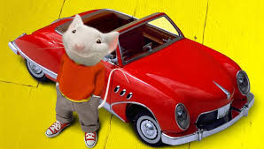

Stuart Little is the cutest and coolest mouse around. He can talk, drive, and solve problems all on his own (except for when he needs some assistance from his human friends). He drives a little red Corvet, which is his signature look. He lives with his human owner, George Little, who is also adorable. They share a room, but each have individual beds. There are 3 different movies, because the public went through Stuart Little withdrawals after the first movie came out on December 5, 1999.
So what's this movie about? Here's a little summary to spark your interest: When the Littles go to an orphanage to adopt a new family member, a charming young mouse named Stuart is chosen. While George is initially unwelcoming to his new brother, the family cat, Snowbell, is even less enthusiastic about having a mouse as his "master" and plots to get rid of him. Against these difficulties, Stuart resolves to face them with as much pluck, love and courage as he can muster. In doing so, he shows his beloved new family that great things can truly come in small packages.
If you ever need a movie to watch while babysitting annoying kids or on a first date, Stuart Little is a perfect option. It's funny, entertaining, and action-packed. It also might make you have for sympathy for the mice of the world, as you understand the difficulties they must overcome to survive in a human-controlled world after watching the movie.